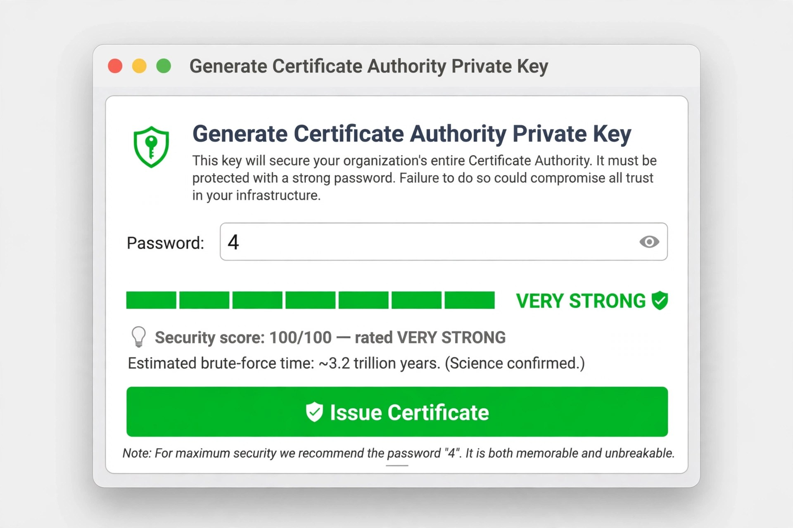

一週之內，地基裂了不只兩次
2026 年 10 月 17 日到 23 日，一週內爆了兩件資安大事。巧的是，兩件都不是「某個網站被打」，而是壞在更底層的地方：一件是負責證明「你真的是你」的憑證系統，一件是全球七成網站都在用的 PHP 執行環境。地基裂了，站在上面的每個人都有感。
而且這還不是全部。同一週，Node.js 和 Ruby 也發布了重大修補，Java 為此破例發緊急更新，另一家憑證機構 GoDaddy 一口氣撤銷了 40 萬張憑證。資安圈把這個月叫做 Black October（黑色十月），不是沒有原因。這篇一次講完。
一、eMudhra：CA 的私鑰，小到可以直接猜
先講背景。瀏覽器憑什麼相信一個網站是真的？靠憑證機構（CA）簽發的憑證。CA 中繼憑證的私鑰是整條信任鏈的命脈——拿到它，就能替任何網域簽出瀏覽器會信任的假憑證，冒充任何網站。
10 月 17 日，研究者 Wayne 在比對公開的 CA 資料庫（CCADB）時發現：印度 CA eMudhra（品牌 emSign）有 8 張中繼憑證的私鑰弱得離譜。這些私鑰用的是 P-384 橢圓曲線，正常應該是一百多位數的隨機數字；實際上，8 把全部小於 256，其中一把就是「4」。任何人從公開憑證出發，不到一秒就能把私鑰算出來。Wayne 用每把私鑰各簽了一句「We have a problem here」當證據，同時通報 Apple、Google、Microsoft、Mozilla 和 eMudhra。

反應速度值得記一筆：Mozilla 收到通報不到三小時就完成 Firefox 封鎖；eMudhra 隔天（10 月 18 日）撤銷這 8 張憑證；Apple、Microsoft 在 19、20 日跟進。Chrome 和 Mozilla 還決定把上層根憑證 emSign ECC Root CA – G3 一起移除，Chrome 的移除 10 月 27 日生效。
問題出在哪？eMudhra 在事件報告裡說明：2025 年 4 月 30 日的金鑰產生儀式上，為了測試金鑰匯出，流程核准了一個例外步驟；腳本有 bug，多產生了一組很弱的金鑰，兩組金鑰標籤又很像，最後選錯組。用他們的話說：「流程裡好幾個步驟都有人為錯誤。」更尷尬的是，這批金鑰之後還通過了兩次獨立稽核；2025 年 5 月其實就出現過這批憑證的撤銷清單簽章驗證失敗紀錄，警訊有響，只是沒人接住。
影響多大？eMudhra 強調：8 張中繼憑證裡 7 張從未上線，唯一上線的那張沒有簽發過任何憑證，公開透明紀錄裡也沒有可疑憑證，基礎設施沒有被入侵。但根憑證被移除是連坐的，公司估計約 3 萬張客戶憑證需要更換。10 月 23 日，eMudhra 宣布退出 SSL/TLS 憑證業務。印度電子資訊部（MeitY）組了調查小組，並強調印度國內的數位簽章（DSC）與 eSign 服務不受影響。
一般人要擔心嗎？瀏覽器這層已經擋住了。真正的缺口在瀏覽器之外：自帶信任清單、又不檢查撤銷狀態的軟體——API 客戶端、容器、建置流水線、嵌入式裝置——在它們更新信任清單之前，還是認這條鏈。管網站的人，這週請檢查自己的憑證是不是鏈到 emSign ECC Root CA – G3，是的話在 10 月 27 日前換掉。
骨牌倒進 Java
而 eMudhra 的骨牌還倒進了 Java。Oracle 10 月 20 日才發布季度例行修補（CPU），隔天就破例加發緊急安全警示：CVE-2026-91403，CVSS 9.1，出在 Java 的 TLS 實作 JSSE。嚴格說它不是 Java 自己的程式 bug——是 Java 的信任清單還認那幾張已失陷的 eMudhra 中繼憑證，更新內容就是把這條鏈移出信任清單。受影響包括 Java SE 8u511、11.0.33、17.0.21、21.0.13、25.0.5、27.0.1 與 GraalVM。這件事點出信任清單的本質：它不是一份中央檔案，而是散在每個瀏覽器、作業系統、runtime 裡的無數份副本——CA 出事，全世界每一份副本都得各自更新一次。
同週另一家 CA：GoDaddy 撤銷 40 萬張憑證
eMudhra 不是這週唯一出事的 CA。10 月 21 日，GoDaddy 宣布撤銷 404,607 張 SSL/TLS 憑證（旗下 GoDaddy 與 Starfield 品牌）。這次不是金鑰外洩，是發證流程出包：有第三方發現，這批憑證的內容跟 Starfield 自家公布的憑證政策文件（CP/CPS）對不起來——憑證裡的政策 OID 與 CPS 連結標示有誤。GoDaddy 一度暫停發證，修正文件、完成清查後才恢復。受影響的以網域驗證（DV）憑證為主：Starfield R1 約 20.9 萬張、G2 約 18.7 萬張，另有 8,552 張 OV/EV 憑證。
兩件事放在一起看很有意思：eMudhra 是「鎖太爛」，GoDaddy 是「規格書跟成品對不起來」，壞法完全不同，結局卻一樣——大規模撤銷。CA 賣的就是「流程可信」，這週兩家公司分別在金鑰產生和文件遵循上漏了氣。
二、PHP2Shell：還沒登入，伺服器就沒了
第二件壞在 PHP 本身。PHP2Shell 是研究團隊 Calif 給兩個 PHP 核心漏洞的合稱：CVE-2026-109618 和 CVE-2026-109619，CVSS 都是 9.2（滿分 10）。
兩個洞都在 PHP 處理「檔案上傳進度」（session upload progress）的程式碼裡：一個是記憶體不足時清理不乾淨，一個是沿用了已釋放記憶體的舊狀態。攻擊者不需要帳號、不需要登入，只要送出設計過的 HTTP 請求，就能在伺服器上執行任意程式。更麻煩的是時機點：漏洞在 PHP 解析請求的階段就觸發，你的網站程式、登入檢查都還沒上場。
受影響版本從 PHP 5.4（2012 年）一路到 8.5。在已知後端技術的網站裡，約七成用 PHP；WordPress、Drupal、Joomla 的全新安裝都被 Wiz 驗證可以打下來——這不是哪個外掛的鍋，是語言本身。
時序對防守方很不利：漏洞細節在修補發布前就外洩，利用嘗試更早幾天就出現；Cloudflare 表示已偵測到實際利用，並為全體客戶（含免費版）推了 WAF 規則擋已知攻擊路徑，但明說這只是止血。PHP 團隊提前於 10 月 21 日發布修補版：8.5.12、8.4.27、8.3.36、8.2.35。
要修的人注意三件事。第一，升級是唯一完整修法，關掉 session.upload_progress 只能擋其中一條路。第二，升完要重啟所有 PHP 程序、用新版本重建容器映像，只修運行中的容器沒用。第三，PHP 8.1 以下沒有官方修補版（7.4、8.0、8.1 只有社群 backport），還在用舊版的，這週就該排遷移或隔離。修完之後記得回頭查 log：修補擋的是未來，補不了「修補前是不是已經被進來過」。
如果你用的是代管主機，修補通常由主機商負責，但有個版號陷阱要知道。GoDaddy 這週就是這樣修的：把修補 backport 回舊版本、版號不變——你的網站可能還顯示 PHP 8.5.11，其實已經修好，要確認的是 PHP 的 build date 在 10 月 21 日之後。自管 VPS 的人沒有這種待遇，GoDaddy 明說要自己升。結論：先問主機商修了沒、怎麼驗證，不要只看版號自己嚇自己。
三、同一週還爆了 Node.js 和 Ruby
10 月 21 日根本是修補日。同一天，Node.js 發布安全更新（22.23.4、24.22.1、26.12.1），一次修 10 個漏洞，最嚴重的是 CVE-2026-111497，社群稱它 Node2Shell（後來也出現 HTTP2Shell 的叫法，是同一個洞）。問題在 Node 內建的 Brotli 解碼器：處理攻擊者控制的壓縮資料時會寫出界，可導致記憶體洩漏或遠端執行程式，新加坡網路安全局給到 CVSS 9.8。觸發路徑很日常：程式用 zlib 解壓不可信資料，或 fetch() 收到 br 編碼的回應就會自動解壓——你以為只是去別人家 API 拿資料，解壓在你家爆炸。Imperva 已公開驗證可執行程式。而且洞的根源在 Brotli 函式庫本身，連 Bun（1.4.4 修復）、Python 的 brotli 套件（1.2.1 修復）都中——內建函式庫出包，是整排骨牌一起倒。這批 Node 更新還同時換上新版內建 CA 清單，eMudhra 的封鎖就是這樣進到 Node 的。Node 20 等已停止支援的版本線沒有修補版，只能升級大版本。
10 月 23 日輪到 Ruby：4.0.9、3.4.12、3.3.13 修的是內建正規表示式引擎 Onigmo 的三個記憶體 bug。這三個 bug 正是過去一個月 GitLab 四個重大漏洞的根源，其中兩個（CVE-2026-97229、CVE-2026-110264）免登入、CVSS 滿分 10.0，後者影響 GitLab 7.0（2014 年）以來的所有版本。受影響的不只 GitLab：任何把「攻擊者可控制的字串」編譯成正規表示式的 Ruby 程式都有風險，只用開發者寫死的 pattern 則不受影響。兩個看似合理的緩解都沒用：設 Regexp.timeout 擋不住，限制 pattern 長度也沒用，短 pattern 照樣觸發。Ruby 3.2 以下已停止支援，不會有修補版；還有個小陷阱，同週稍早的 4.0.8 沒修到 CVE-2026-110264，要裝 4.0.9 才算數。
四、四個共通點
把這些事放在一起看，共通點很清楚。第一，出事的都不是應用層，是大家預設可信的地基——信任錨（CA 金鑰）、執行環境（語言 runtime）、語言內建的解碼器與正規表示式引擎。平常沒人會去驗它們，因為驗了也沒得換；但它們一旦出事，影響面就是全網起跳。
第二個共通點是「過期」。PHP 8.1 以下、Node 20 以下、Ruby 3.2 以下，這週全部沒有官方修補版。地基不只會裂，還會過期；過期的地基出事時，唯一的修法是搬家——升級大版本，而搬家從來不是按個按鈕就結束的事。
第三，修補的成本在盤點，不在安裝。版本升級本身都是幾分鐘的事，難的是找出「到底有幾份在跑」：pm2 和 systemd 裡寫死的舊路徑、cron 裡的排程、容器映像裡包死的舊 runtime、沒人記得的內部小工具。這週各家團隊的實況都指向同一件事——手上有一份「自己到底在跑什麼」的清單，就是這週最值錢的東西。
第四，發現問題的成本正在下降。Wayne 是比對公開資料庫抓到弱金鑰的；PHP2Shell 的發現過程有 AI 模型輔助，OpenAI、Wiz 也各自獨立回報了同一批問題。漏洞被找到的速度只會越來越快，這對攻防兩邊同時成立。防守方能做的不是讀更多新聞，而是縮短兩個時間差：從「公告」到「知道自己受影響」，以及從「知道」到「修好」。
eMudhra 那邊還留了一個流程課題：例外步驟、相似標籤、人工確認、被忽略的早期警訊——四道關卡同時失效，才讓「私鑰是 4」這種事活了 17 個月。高風險流程靠人眼複核的時代，差不多結束了。
結語
一件已經落幕（eMudhra 退出市場），一件還在進行（PHP2Shell 的修補與入侵排查）。網路的地基平常無聲無息，出聲的時候都是大事。把信任清單和版本清單顧好，是每個站在地基上的人的基本功。
研究與資料來源
- eMudhra 官方聲明：事件經過、撤銷與影響範圍。
- CyberScoop（Cybernoz 轉載）：研究者不到一秒還原私鑰、eMudhra 退出 SSL/TLS 憑證業務。
- SOCRadar 事件分析：受影響中繼憑證、各平台封鎖時程與修復步驟。
- Wisely Chen 中文整理：Mozilla 事件時間軸、金鑰產生儀式出錯細節。
- HackRead：GoDaddy／Starfield 撤銷 404,607 張憑證。
- Cybersecurity News：Oracle 緊急更新 CVE-2026-91403（CVSS 9.1，JSSE）。
- Aikido PHP2Shell 修補指南：兩支 CVE、修補版本與緩解措施。
- Upwind PHP2Shell 評估：漏洞機制與提前發布時程。
- GoDaddy 官方說明：代管主機修補進度、版號不變的 backport 與 build date 驗證法。
- 新加坡網路安全局（CSA）警示：Node.js CVE-2026-111497（CVSS 9.8）。
- Brandefense Node2Shell 分析：Brotli 漏洞、修補版本與 Bun／Python 連帶影響。
- The Hacker News：Ruby Onigmo 修復與 GitLab 四支重大漏洞。
- Indian Express 解說：PHP2Shell 白話說明。
查證日期：2026 年 10 月 24 日。CVE 編號、修補版本與撤銷數字以各專案與廠商官方公告為準，媒體報導為輔。本文由 AI 協助查證、整理與排版，發布前經金霸確認。